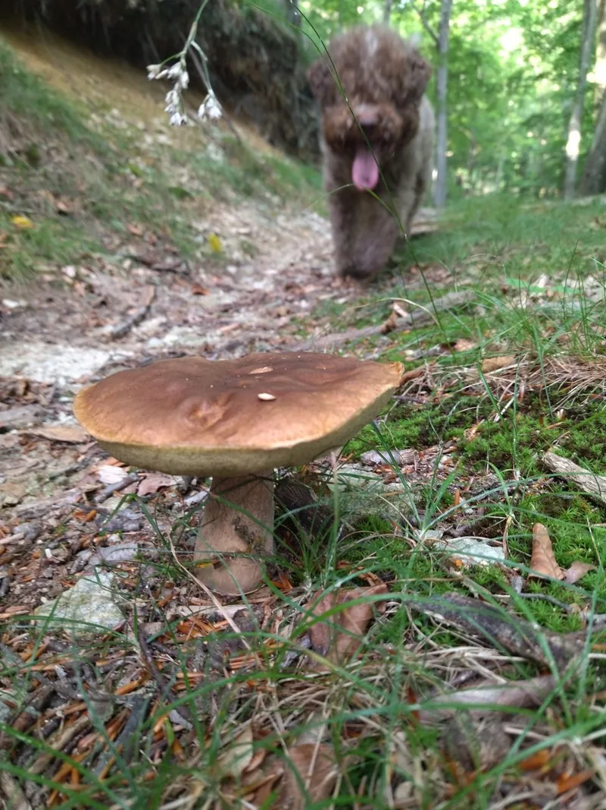
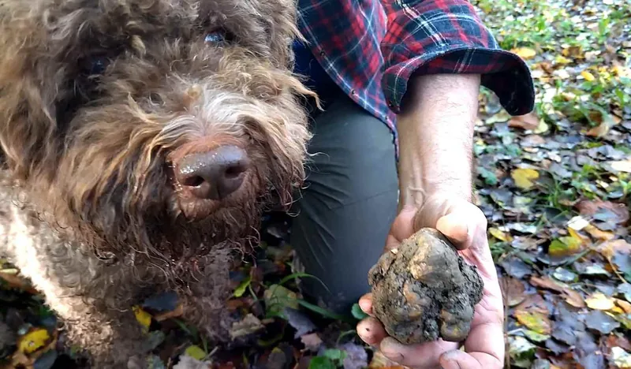
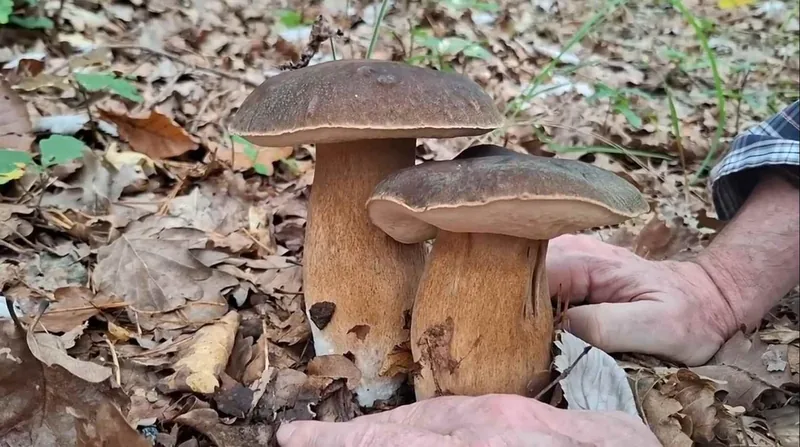
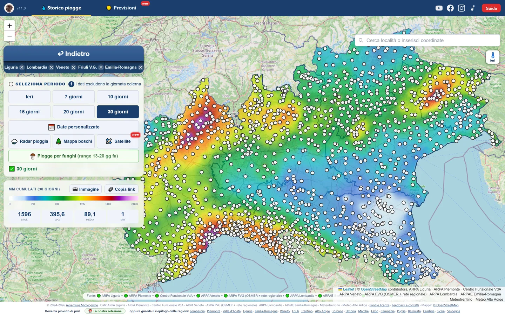
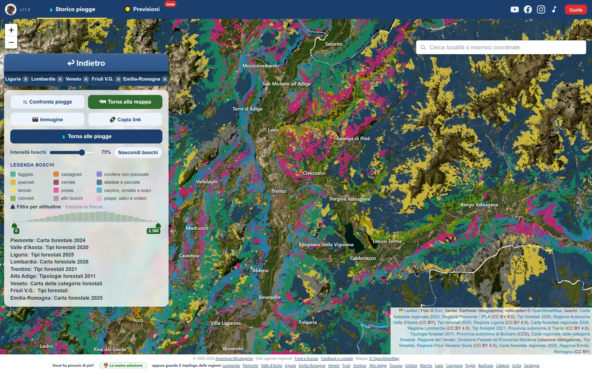
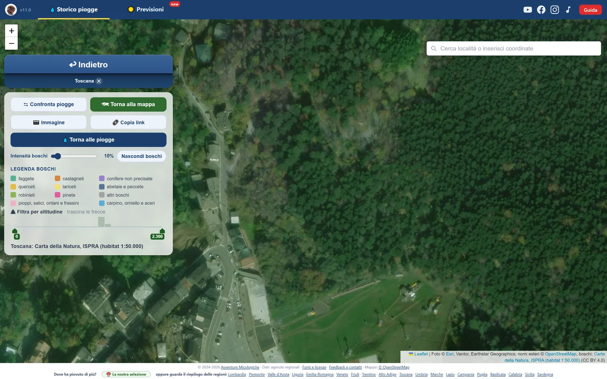

YouTube
Guarda il nostro canale YouTube.
Le nostre avventure a funghi e tartufi, con Archie, il nostro lagotto.



La mappa dei pluviometri reali, per chi va a funghi.
Gratis, senza pubblicità, senza registrazione.
I millimetri misurati dai pluviometri delle agenzie regionali. Più di 5000 stazioni, in 5 nazioni: Italia, Svizzera, Austria, Francia e Slovenia.
Apri la pioggia del Nord-Ovest, 30 giorni · Le località più bagnate

Ogni pallino è un pluviometro: aprilo e trovi il grafico della pioggia, della temperatura, del vento e dell'umidità.

Faggete, castagneti, querceti, abetaie, lariceti e pinete, dalle carte forestali delle Regioni: sopra la cartina o sopra la foto dal satellite.

Ti avvicini fino a vedere gli alberi uno per uno, i sentieri e i prati.

Il tempo dei prossimi sette giorni, ora per ora: temperatura, pioggia, probabilità e vento. E la diretta radar della pioggia che sta cadendo adesso.

Le nostre avventure a funghi e tartufi, con Archie, il nostro lagotto.



Le domande del tesserino, in un gioco. Domande ufficiali per Campania, Lazio, Marche e Toscana; per le altre quattro regioni, esempi elaborati sui testi di studio. Gratis, senza registrazione, anche dal telefono.
Le regioni: Lombardia · Piemonte · Emilia-Romagna · Liguria · Campania · Lazio · Marche · Toscana